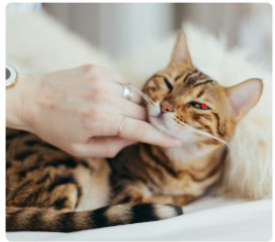

Physical Exam
Basic Pet Exam:Nose to Tail Health Check
Make an appointment
Visit our clinic 848 King Street,Mesa,AZ 85201,Boston, USA

Basic Pet Exam
Animals cannot communicate with us as wasily as we can with each other, and they are very good at hiding pain. Only a thorought physical exam by a veterinarian and/or laboratory work can determine if there is a problem with your pet.
Their relatively short lift -span means that they age faster than humans, and this makes their yearly physical exam crucial for their well-being.